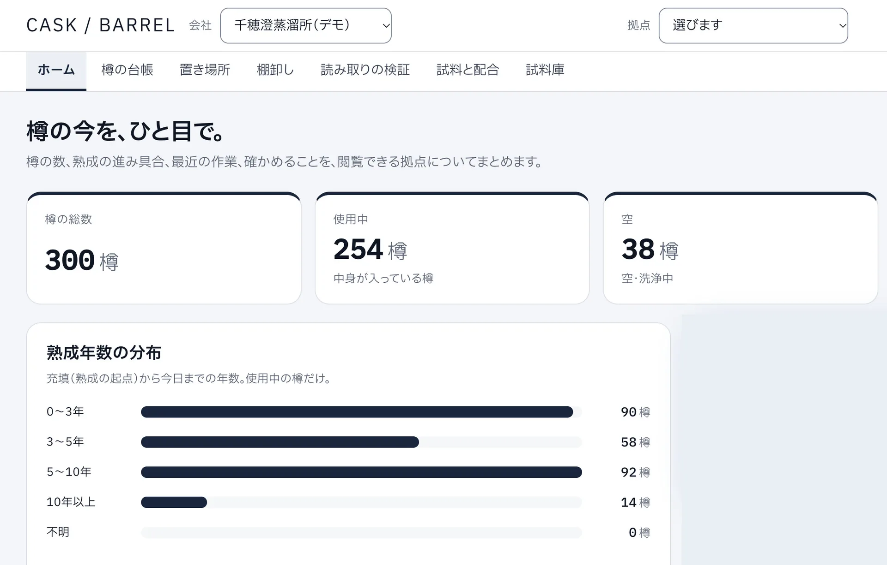
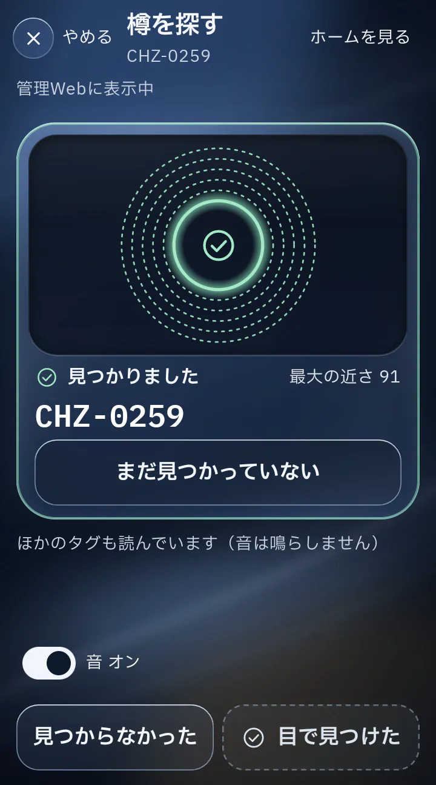
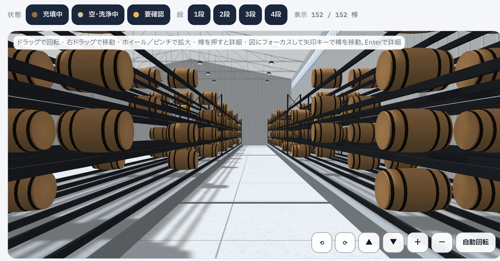
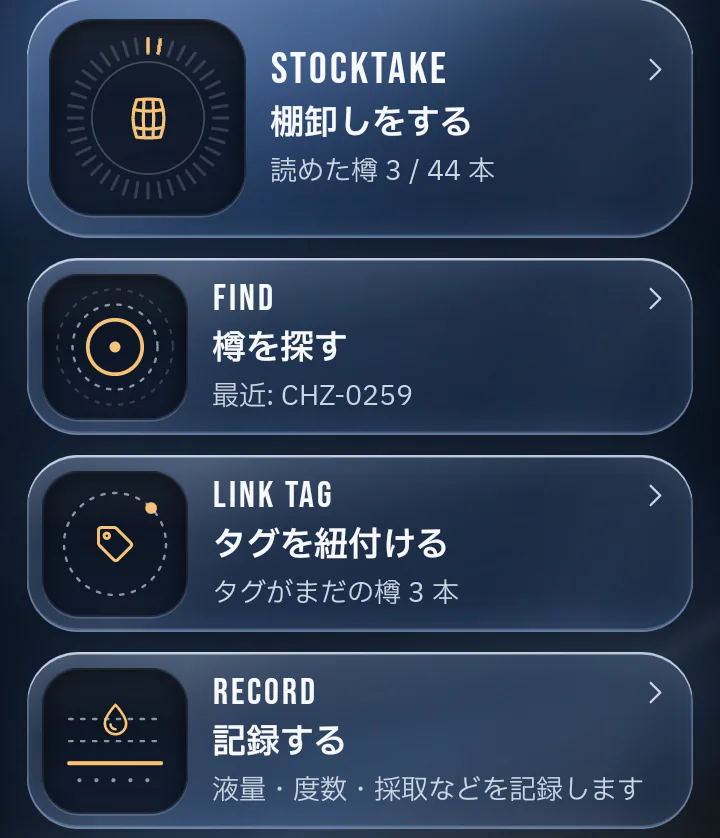
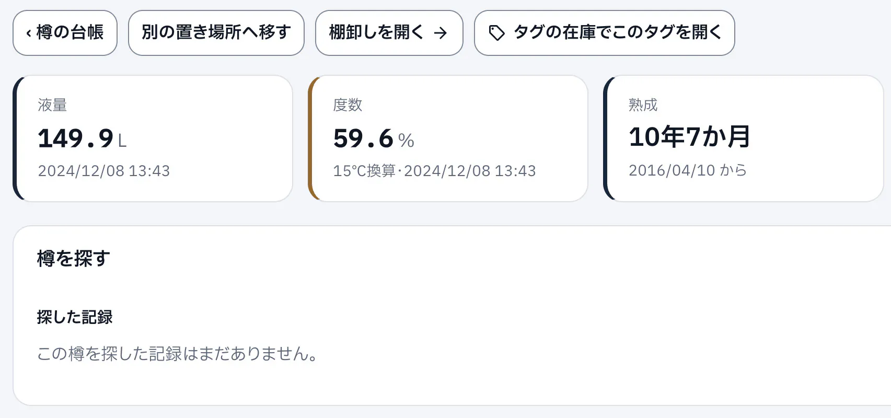
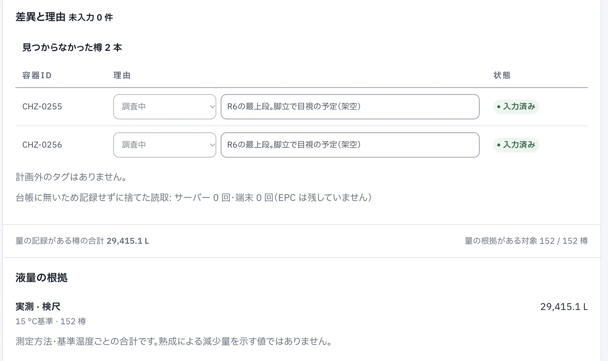
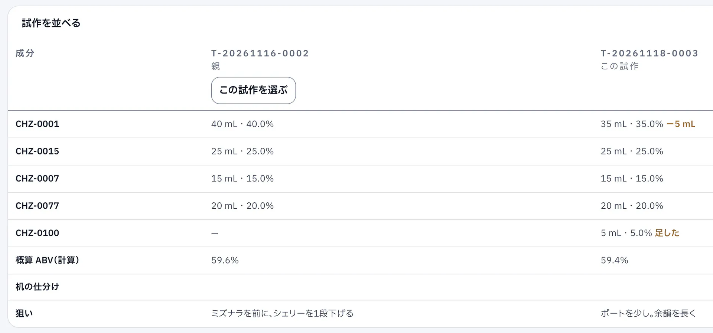
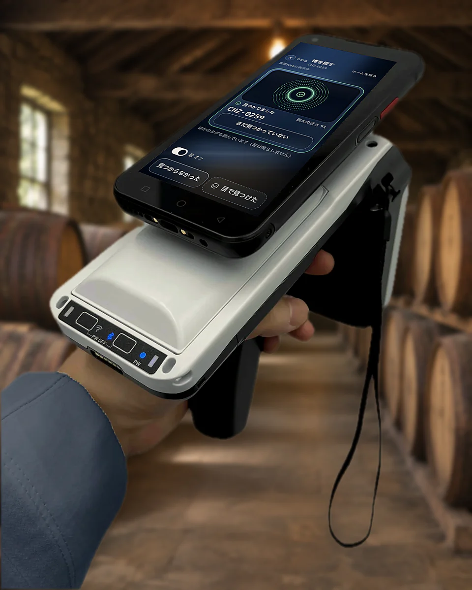

導入の前に
読めるかどうかは、貯蔵庫ごとに確かめます。
タグの読みやすさは、樽の置き方や積み方で変わります。そこで、買っていただく前に簡易検証を行い、お客様の貯蔵庫で、試験用のタグを使って同じ範囲を何度か読んで比べます。
読みにくい棚は、タグの QR や樽の番号と、置き場所の記録で管理します。RFID で読むのは、読める棚だけにすることもできます。
ウイスキー蒸溜所とワイナリーのための、樽の管理サービス
樽1本ごとの置き場所・中身・測った値を、現場の端末と事務所の画面で1つの台帳にし、ブレンダーの試飲と試作の記録までつなげます。


ベータ版です。最初にお使いいただく蒸溜所・ワイナリー（アーリーアダプター）を募集しています。導入は、簡易検証でお客様の貯蔵庫で使えることを確かめてから、準備が整いしだい順に進めます。
時間は、樽の中で重なります。
記録は、いつもの作業のついでに
重ねていけます。
記録するのは、移す・数える・測る・試飲するときだけです。貯蔵庫では RFIDリーダーと Android 端末の「現場アプリ」を、事務所では「管理ポータル」を使います。
あの樽は、どこに置いたか。
何年も動かさない樽の置き場所が、担当の人の記憶と表計算の一覧にしかない。担当が休みの日は、端から見て回ることになる。
台帳と棚が、合わない。
番号を目で見て紙に書き、事務所で台帳と突き合わせる。足りない樽がどれか分かるのは、そのあとになる。
前は、なぜこの樽を選んだのか。
試飲のノートと樽の台帳が別々にあって、判断の理由は人の頭の中に残る。人が替わると、たどれなくなる。
見失わない
RFIDリーダーを持って通路を歩くと、樽に貼ったタグをまとめて読みます。読めた数が、その場で増えていきます。
読み取れる距離や確実さは、タグと貯蔵庫の置き方で変わります。
残った樽から、そのまま探しに行けます。タグが読みにくい場所の樽も、置き場所の記録から見に行けます。
探したい樽を番号か一覧で選び、RFIDリーダーを向けて歩きます。近づくほど数字が上がり、音が速くなります。図では、輪の間が詰まっていきます。


つながる・残る
液量や度数は、樽の前で現場アプリから入れます。

測り方と日時と一緒に届くので、紙に書いて打ち直す必要はありません。

詰めた日、測った値、移し替え、採取が、樽1本ごとに並びます。担当が替わっても読み返せます。

訂正も取り消しも、履歴に残ります。棚卸しで見つからなかった樽には理由を付け、責任者が承認します。

つながる
ブレンディング・ラボ（オプション）では、瓶の QR か番号から、その樽の素性と前回の試飲の記録が並びます。ブレンダーの方の意見を伺いながら、さらに改善していきます。

判断するのはブレンダーの方です。CASK / BARREL は配合の提案も予測もしません。判断の材料と理由を、樽の記録の横に残します。
開発中試料庫の瓶を、棚の段ごとにまとめて数える機能と、1本を探す機能を作っています。
蒸溜所とワイナリーでは、樽の扱い方も、残したい記録も違います。
導入の前に
タグの読みやすさは、樽の置き方や積み方で変わります。そこで、買っていただく前に簡易検証を行い、お客様の貯蔵庫で、試験用のタグを使って同じ範囲を何度か読んで比べます。
読みにくい棚は、タグの QR や樽の番号と、置き場所の記録で管理します。RFID で読むのは、読める棚だけにすることもできます。

現場で使う機器


台帳を守るしくみ

ベータ版
ベータ版を最初にお使いいただく蒸溜所とワイナリーを募集しています。まずはヒアリングで、樽の数や置き方、いまの記録のつけ方、どのくらいの規模から始めたいかを伺います。
日本国内のウイスキー蒸溜所とワイナリー。海外の蒸溜所・ワイナリーの方は、ご相談ください。
お客様の貯蔵庫で、試験用のタグを使い、同じ範囲を何度か読んで比べます。お使いになりたい Android 端末も、このときに確かめます。簡易検証は有償です。費用は、場所と範囲を伺ってからご案内します。
カスク用 RFID タグ、RFIDリーダー、Android 端末。ラボの瓶には液体対応 RFID タグ（瓶の機能は開発中）。
サービス利用料は、タグと機器をご購入いただいたうえで、導入から一定の期間は無償です。費用は、サービス利用料、タグ・機器、簡易検証、導入の支援に分けてご案内します。
開発を進めながら、最初のお客様に使っていただく段階の版です。画面や機能は変わることがあります。
ヒアリングは、すぐに始められます。簡易検証は、ヒアリングのあとで日程をご相談します。導入は、当社の準備が整いしだい、順にご案内します。
置き方によって変わります。買っていただく前の簡易検証で確かめます。読みにくい棚は、タグの QR や樽の番号と、置き場所の記録で管理します。
樽に貼るカスク用 RFID タグ、RFIDリーダー、現場アプリを入れる Android 端末です。ラボの瓶には、液体対応 RFID タグを使います（瓶の機能は開発中）。枚数と台数は、ヒアリングと簡易検証のあとで一緒に決めます。
置き換えるものではありません。現場の棚卸しと置き場所の照合から始めます。いまお使いの一覧の取り込みや、つなぎ方は、項目を見ながら個別に決めます。
使えません。記録と照合を助ける道具です。帳簿は、いまのままお使いください。
RFID は樽を見分けるためのもので、熟成の状態は測れません。測った液量や度数を、記録として残します。
しません。判断するのはブレンダーの方です。
樽とロット、補酒（トッピング）、移し替え、樽の状態を扱えます。醸造の進め方はワイナリーごとに違うので、お話を伺って合わせます。
樽の数、貯蔵庫の数、使う範囲で変わります。サービス利用料と、タグ・機器、簡易検証、導入の支援に分けてご案内します。サービス利用料は、タグと機器をご購入いただいたうえで、導入から一定の期間は無償です。
お問い合わせフォームが開きます。相談テーマは「CASK / BARREL（アーリーアダプター・ヒアリング）」をお選びください。選べない場合は、お問い合わせ内容に「CASK / BARREL」とお書き添えください。